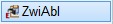

")
")
Texte in die Windows®-Zwischenablage durch Rahmenauswahl kopieren, um diese in ein anderes Programm, z. B. Word, eine ISBCAD-Abfrage, ein Textfeld oder Dialogfeld zu übertragen.
Es können mehrere Rahmen nacheinander aufgezogen werden. Dadurch lassen sich mehrere Textbereiche chronologisch in die Zwischenablage übernehmen, und die kopierten Inhalte über den Windows®-Zwischenablageverlauf mit Windows-Taste+V nacheinander einfügen. Die Windows®-Funktion "Zwischenablageverlauf" steht nur zur Verfügung, wenn sie aktiviert ist, ansonsten wird der zuletzt gewählte Textbereich in die Zwischenablage übernommen. Um den "Zwischenablageverlauf" zu aktivieren, rufen Sie die Windows-Einstellungen auf [Einstellungen > System > Zwischenablage], und aktivieren Sie die Option [Zwischenablageverlauf]. Alternativ können Sie einen beliebigen Text markieren z. B. im Browser oder Word und Windows-Taste+V drücken: Im eingeblendeten Hinweisfenster klicken Sie auf Aktivieren.
|
Hinweise: |
|
·Verwenden Sie nicht Strg+V oder Windows-Taste+V, um Text direkt in eine ISBCAD-Abfrage einzufügen (z. B. [Konst 1 | Texte | zeichn]). Diese Tastenkombination ruft in der Standardeinstellung die Vermaßungsfunktion auf. Siehe weiter unten: Text einfügen. ·Enthält ein Text Sonderzeichen, kann es vorkommen, dass diese nicht korrekt dargestellt werden (z. B. als Rechteck). ·Texte, die in einem Textwinkel angeordnet sind, werden in Leserichtung (von links nach rechts) in die Zwischenablage übernommen. Sind Texte mit größerem Abstand zueinander platziert, wird dieser Abstand nach dem Einfügen auf ein Leerzeichen reduziert. ·Werden Textfelder, die Makrotexte enthalten, kopiert, wird der Textinhalt in die Zwischenablage übernommen. Ansonsten wird der Makrotext-Name (Klammertext) kopiert. |

1.Text in die Zwischenablage kopieren
§Ziehen Sie einen Rahmen durch das Anklicken von zwei Punkten um die Texte auf. [1.Punkt]; [2.Punkt]. Damit ist die Aktion abgeschlossen.
Achten Sie bei Textfeldern darauf, den Rahmen um das komplette Textfeld zu ziehen.
§Optional: Ziehen Sie weitere Rahmen auf, um zusätzliche Texte zu erfassen, und in den Zwischenablageverlauf zu legen.
2.Text einfügen
§Fügen Sie den Inhalt ein:
·Zielprogramm (z. B. Word): Wechseln Sie in das Programm, in welches der Text übertragen werden soll. Setzen Sie den Cursor an die Stelle, an der der Text eingefügt werden soll. Fügen Sie den Text mit der Tastenkombination Strg+V oder über das Kontextmenü (Rechtsklick) ein.
·Abfrage (z. B. [Konst 1 | Texte | zeichn]): Klicken Sie im Eingabefeld die rechte Maustaste, um das Kontextmenü zu öffnen, und wählen Sie den Eintrag Einfügen.
·Dialogfeld (z. B. [Konst 2 | PlanBe]): Setzen Sie den Cursor in das Eingabefeld, in das der Text eingefügt werden soll. Fügen Sie den Text mit der Tastenkombination Strg+V oder über das Kontextmenü (Rechtsklick) ein.
·Textfeld: Erzeugen oder ändern Sie ein Textfeld mit [Konst 1 | Texte | Textfeld/ändern]. Setzen Sie den Cursor an die Stelle, an der der Text eingefügt werden soll. Fügen Sie den Text mit der Tastenkombination Strg+V oder über das Kontextmenü (Rechtsklick) ein.
§Optional: Zwischenablageverlauf (im Zielprogramm, Textfeld oder Dialogfeld): Drücken Sie Windows-Taste+V, um das Verlaufsfenster zu öffnen. Klicken Sie in der Liste den gewünschten Text an. Der Text wird an die Cursorposition gesetzt. Klicken Sie im Verlaufsfenster weitere Einträge an, um diese einzufügen.
Siehe auch:
·Zeichnungsteile in die ISBCAD Zwischenablage kopieren
Zugehörige Referenzen: